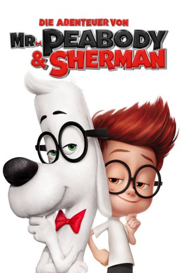

Alternativ: Mr. Peabody & Sherman gesehen am 25.10.2015
gesehen am 25.10.2015
 
 IMDB-Wertung: 6.8 / 10
IMDB-Wertung: 6.8 / 10  Metascore:
Metascore: 
Mr Peabody ist der intelligenteste Hund der Welt und somit vielleicht sogar schlauer als jeder Mensch. Der kleine Junge Sherman ist viel eher sein Haustier als andersherum. Als er verbotenerweise die Raum- und Zeitmaschine WABAC bedient, beginnen sich Ereignisse aus der Vergangenheit zu verändern und sich auf die Gegenwart auszuwirken. Nur Sherman und Mr Peabody können das Raum-Zeit-Kontinuum jetzt noch vor der Katastrophe retten.
Jahr: 2014
Dauer: 92 Minuten
FSK: 0
Land: USA Studio: 20th Century FoxTonspuren:
Untertitel: Deutsch,
Auflösung: 1080p (1920x1080) Größe: 5478 MB
Genre: Animation/Trick, Abenteuer, Komödie, Familie, Sci-Fi
Regisseur: Rob Minkoff
Drehbuch: Jay Ward, Craig Wright, Robert Ben Garant, Thomas Lennon, Ted Key
Soundtrack: Danny Elfman
Darsteller:
Datei: X:\Kinder Filme (A-F)\Abenteuer von Mr. Peabody & Sherman, Die (2014, FSKo.Al., 1920x1080) 3D.mkv seit 15.05.2015
Festplatte: Kinder-Filme+Trick
 Es gibt insgesamt 68 Filme in der Gruppe 'Kinder Filme (A-F)'
Es gibt insgesamt 68 Filme in der Gruppe 'Kinder Filme (A-F)'